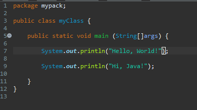
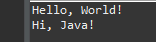
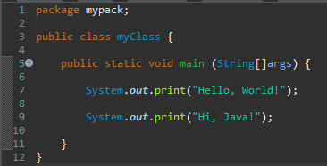
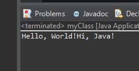
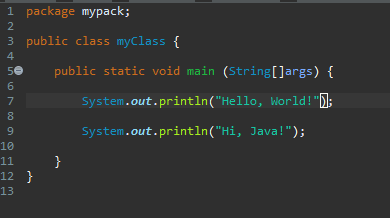
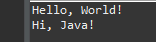
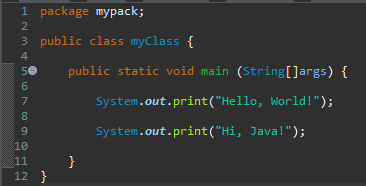
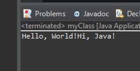

In a console-based Java program or a program with the only output is a text. Java printing is one of the most necessary procedures that makes the program engageable, readable, and understandable. It is also used to print the output of a variable.
In Java, there are lots of ways to print a text. However, in this tutorial, we will tackle the two most used and basic ways to print a text.
The println(); Method
This is used to print a text or a variable’s output on the next line. To use this, the syntax would be: System.out.println();

Output

To better understand the concept of println (printing on the new line), imagine you are typing on a Microsoft Word document. You are typing your first sentence on a straight line. You pressed "Enter" on your keyboard and then typed your second sentence right below your first sentence.
The print(); Method
This is used to print a text or a variable’s output on the same line with other printed texts or outputs. To use this, the syntax would be: System.out.print();

Output

To better understand this, imagine that this is like your typing your sentences in one straight line.
CodeDive!
What's your name? In this activity, try to print your whole name with this format: Last name, First Name and Middle initial/s. Input it between the quotation marks of the System.out.println(). Last step, see if it works and then smile. 😉
MAWD
THINGs
Java Printing
Lesson 4
<Prev
Next>
Understanding Java Printing
The println(); Method

Output
The print(); Method

Output
CodeDive!
What's your name? In this activity, try to print your whole name with this format: Last name, First Name and Middle initial/s. Input it between the quotation marks of the System.out.println(). Last step, see if it works and then smile. 😉